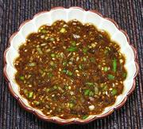

|
Soy Scallion Dipping SauceKorea - Yangnyum Ganjang | ||||
| Makes: Effort: Sched: DoAhead: |
3/4 cup * 10 min Yes |
This is a popular dipping or topping sauce, particularly for pancakes and other fried foods. It can be kept refrigerated for a week or so, but the scallions quickly lose their green color unless added at the last minute. | |||
|
|
2 1/4 2 2 1 2 2 1 |
c T T t T t T |
Scallions Soy Sauce Rice Vinegar Water Sugar (1) Sesame Oil, dark Chili Flake (2) Sesame Salt (3) |
Make - (10 min)
|